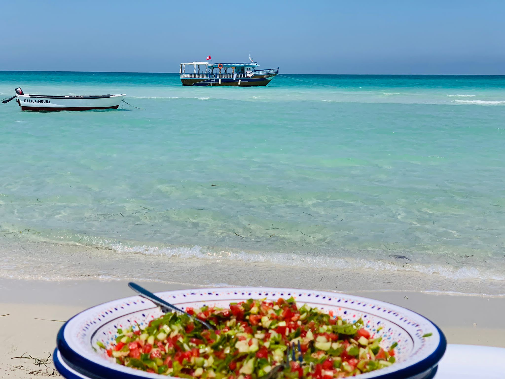
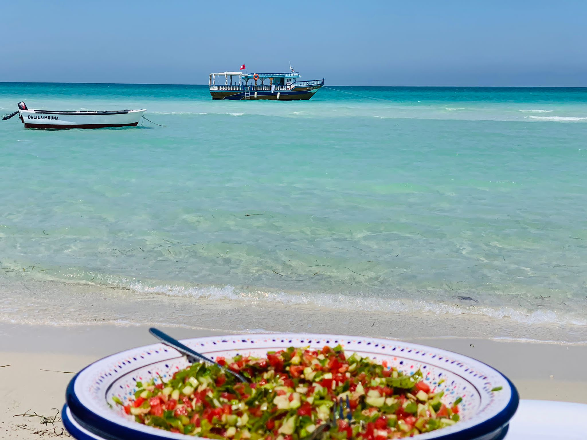

+216 55 533 818
+216 55 533 818
 +216 55 533 818
+216 55 533 818
Depuis plusieurs années, nous organisons des excursions authentiques et inoubliables à travers l'île de Djerba et ses environs. Que ce soit une balade en mer au coucher du soleil,une aventure en quad dans les sentiers cachés, ou un safari en 4x4 dans le désert, notre objectif est simple : vous faire vivre des moments magiques et uniques. Basés à Djerba, nous sommes une équipe locale passionnée par notre île, son histoire, sa culture et ses paysages naturels. Chaque sortie est pensée pour offrir sécurité, plaisir et découverte à nos visiteurs. Nous parlons français, arabe, anglais et italien , et nous adaptons chaque excursion à vos envies !

Vivez une journée détente à bord d’un bateau traditionnel. Entre baignade, animation, déjeuner et paysages marins à couper le souffle, cette balade est idéale pour toute la famille.


Vivez une journée détente à bord d’un bateau traditionnel. Entre baignade, animation, déjeuner et paysages marins à couper le souffle, cette balade est idéale pour toute la famille.
Partez à l’aventure sur les pistes sablonneuses de l’île. Sensations fortes garanties, encadrées par un guide local expérimenté.

Évadez-vous vers le désert du sud tunisien en 4x4 : dunes dorées, oasis cachées et villages troglodytes comme Chenini ou Ksar Ghilane. Une vraie aventure saharienne !
 
